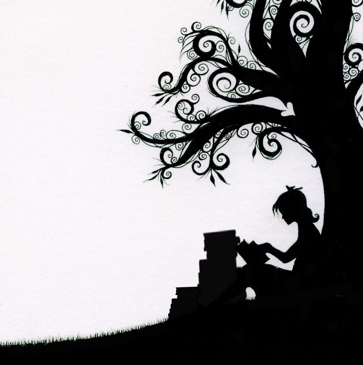
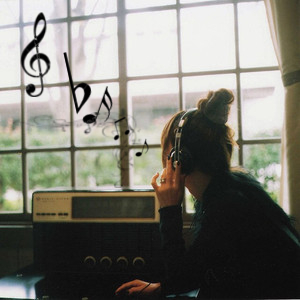

Biodata

Hi! Namaku Muthi Ananda Sharfina. Biasa dipanggil Muthi (minus h-nya). Aku lahir di Bogor. Tepatnya hari Kamis, tanggal 12 Juli 2001. Aku merupakan anak pertama dari ibu dan bapakku. Kakak dari adik-adikku. Dan cucu dari kakek dan nenekku:)).
1. Reading a Book

Aku suka membaca buku, kecuali buku pelajaran tentunya.
2. Fangirling
Sering fangirlingin oppa-oppa korea. Suka sama Sehun (acu exo-l).
3. Listening a Music

Gatau lagi mau nulis apaan:p.